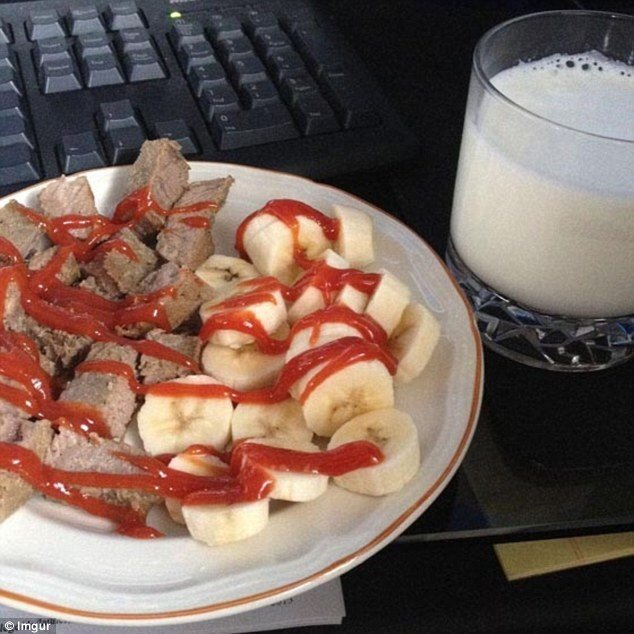

Tunanatoni Breakfast
If you really want to start your day in a special way then you need to try the Tunanatoni Special Breakfast. This is a signature dish from a Portuguese chef I once met while travelling.
Ingredients
- One can of your preferred tuna
- Banana (The Moldier the better)
- Ketchup
- Milk
Steps
- Open the can of tuna and spill the excess oil if there is any. Once that is finished put the tuna in your plate of choice.
- Peel a banana and make sure to slice it consistently. If one is not enough you may peel more. Also Make sure to get the moldiest banana you have available to enhance this dish's sweetness.
- Once everything is in the plate you may now pour some ketchup over the ingredients in the plate.
- Pour yourself a cup of milk.
- Enjoy!